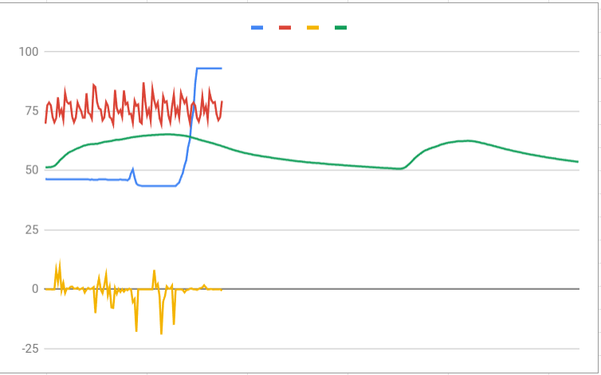
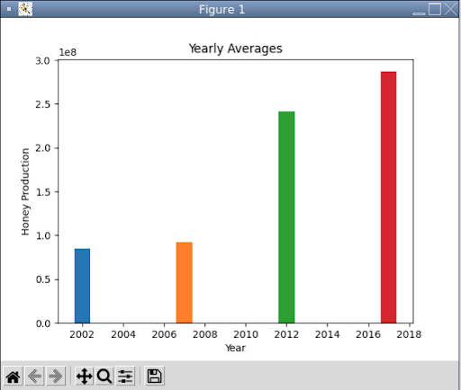
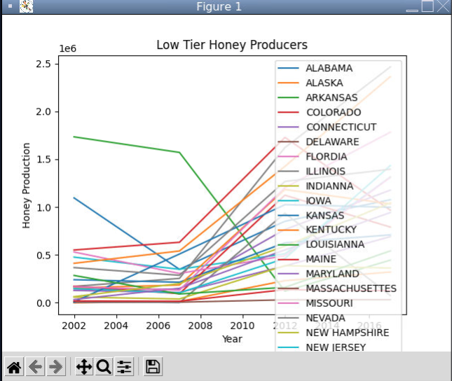
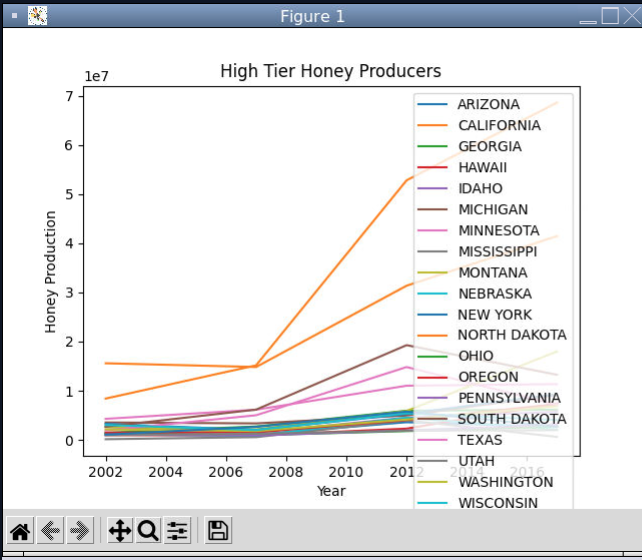
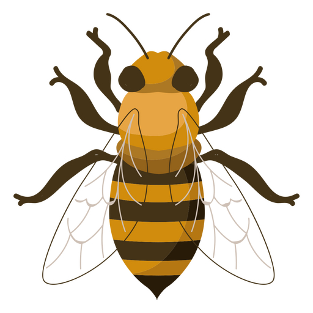

ch
Portfolio
Home
Portfolio
About Me
This is my Portfolio Page!
This Is My First Game!
We made a game similar to the popular toy, Etch-A-Sketch.
In our game, the player uses the arrow keys to maneuver an arrow around and inside a designated boarder. If the player chooses
to do so they can change the color of their arrow and change the color of the arrow's trail.
Arrow Game!.

This was our 1.2.5 project! We made a fully interactive game in which the user has to press a series of arrows using the arrow keys.
As the user progresses, the levels get harder and the backgrounds change. We randomized the arrow directions and if the player made a mistake, the sequence restarts.
Sandy Cheeks Wizard Academy
This is our remixed game from Scratch.com, we made a Spongebob / Wizard platformer game. It consists of Sand Cheeks from Spongebob and her adventure to become a wizard. The player uses the arrow keys to move around
the map to avoid the red lava. /
Fish Tank Monitor

In this project we documented and fixed issues we found within the fish tank. We first started by adding breakpoints to the sections we found problems with. We debugged the issues of alkalinity level, temperature.
PLTW 3.1.6 Rover Phone Home
In this project we were told to use data from 4 different sensors to locate the biome of a lost Rover.
We separated the data into 4 different categories and figured out what data fit with what sensor based on the descriptions
of each location. Below is our graph of the separated data. We believe the blue data is our temperature readings,
the green data is our light sensor, the red data is our sound readings, and the yellow sensor is the wind readings.

Making Meaning from Data
  
In this project we found that our graph plotted the data of the amount of honey each state produced.
Large producers produced 7,500,000 million lbs. of honey while medium produces produced 2,500,000 lbs. of honey.
Any lower production levels would be small producers.
